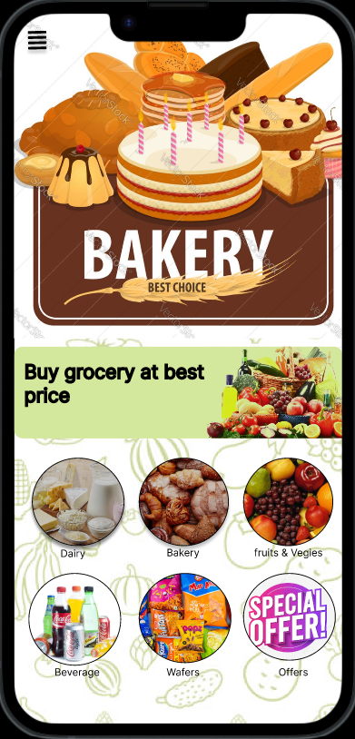

Web Developer | UI/UX Designer
Hello, I'm Sudhanshu Mishra, a passionate and creative web developer and an UI/UX designer based in Panvel. With a strong foundation in front-end I strive to create beautiful and functional websites that leave a lasting impression. My journey in the world of web development began from 11th standered when i created my first application using Python. Since then, I have honed my skills in HTML, CSS, Figma and UI/UX designing, and various web frameworks to bring ideas to life. I am always eager to stay updated with the latest technologies and industry trends to deliver innovative solutions. In addition to my technical skills, I have a keen eye for design and user experience. I believe in the power of clean, intuitive interfaces that enhance the user's journey. Collaboration and communication are at the core of my work ethic, and I enjoy taking on challenges that push me to grow both personally and professionally. When I'm not coding, you can find me dancing, reading stories and playing football. I am constantly seeking new opportunities to learn and contribute to exciting projects. Let's connect and build something amazing together!
This project is based on online grocery shopping, currently underdevelopmemt but some of the functions are working. The working features are the back button, main menue option, Log Out, Bakery button is working and Dairy button is working.
 Visit the PrototypeThe below given site is a landing page for an mentlwellness site. This site was made just to tell people what the application is about and what all features it has and also it consist of a registration form.
Please Visit The Site